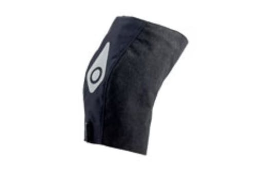

Vasopneumatic Compression

What is Vasopneumatic Compression?
Vasopneumatic compression is a cutting-edge treatment modality employed in physical therapy to accelerate the healing process. This technique utilizes inflatable garments, such as sleeves or boots, that are wrapped around the affected area. Controlled air pressure is then applied to facilitate improved blood circulation and lymphatic drainage. Some of these treatment devices also include a cryotherapy (ice) component along with compression for pain relief.
Conditions Treated
Musculoskeletal Disorders
- Sprains and Strains
- Post-operative Edema
- Arthritis
Vascular Conditions
- Venous Insufficiency
- Lymphedema
Sports Injuries
- Shin Splints
- Delayed Onset Muscle Soreness (DOMS)
How Does Vasopneumatic Compression Aid Treatment?
- Improved Blood Circulation: The rhythmic inflation and deflation of the garment promote better blood flow, aiding in delivering oxygen and nutrients to the affected area.
- Reduced Swelling: The compression helps to move excess fluid away from the injured site, thereby reducing edema and accelerating the healing process.
- Pain Relief: The treatment provides a massaging effect that can significantly alleviate pain and discomfort.
Frequently Asked Questions
Q: Is vasopneumatic compression safe?
A: Yes, when administered by a qualified physical therapist, vasopneumatic compression is a safe and effective treatment option.
Q: How long does a typical session last?
A: A standard session usually lasts between 15 to 30 minutes, depending on the condition being treated.
Q: Will my insurance cover this treatment?
A: Coverage varies by insurance provider. It's advisable to consult with your insurance company for specific information.
Take the Next Step in Your Recovery Journey
If you're dealing with pain or musculoskeletal disorders, vasopneumatic compression might assist with your recovery.
Contact us today to schedule an appointment and experience the benefits of this advanced healing modality.
Ready to get started? Call us or request an appointment today.
Call (985) 641-5825 Request Appointment